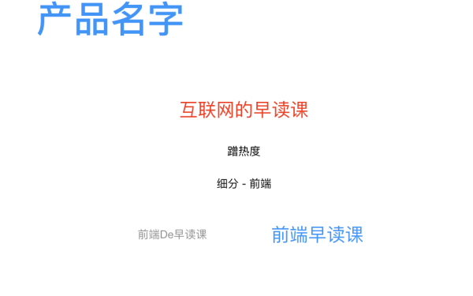
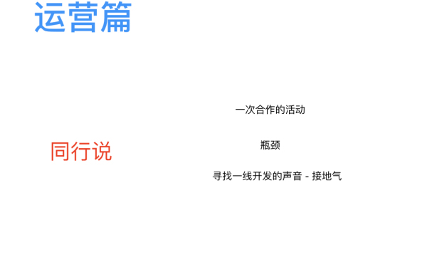
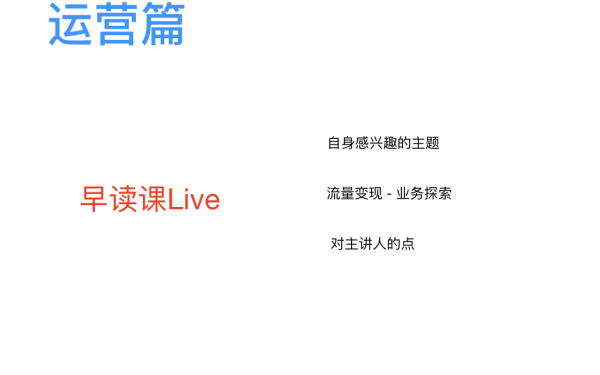
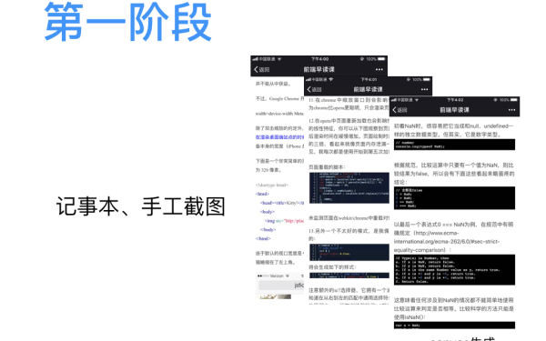
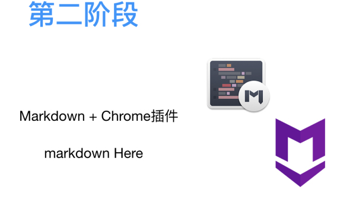
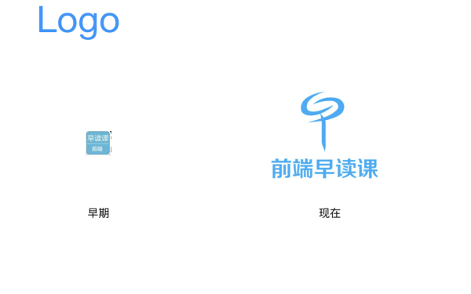
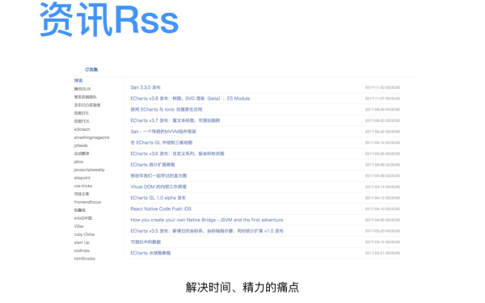
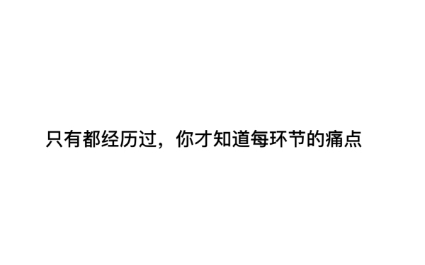

3
/
56
复盘前端早读课的那些年
前端早读课
70:36
70:56
听课列表
1.0x
倍速:1.0x
查看课程介绍
评论
48
仙人掌
2018-02-11
👏🏻👏🏻👏🏻
仙人掌
2018-02-11
谢谢答疑
仙人掌
2018-02-11
有没有什么比较具体的里程碑，比如做了什么措施，几天内涨了多少粉丝
雪上蒿
2018-02-11
情大的声音很好听
钱育辉
2018-02-11
感谢情大今天的分享，🎉🎉
钱育辉
2018-02-11
对于早读课后期发展有什么计划么
Z皓
2018-02-11
情大你在技术上的学习采取的是怎样的方式
雪上蒿
2018-02-11
情大是出于什么契机考虑，不做一线开发了，这个是很早就开始规划了吗？职业发展路径
钱育辉
2018-02-11
情大怎么保持充沛的精力 你是有健身 还是 有什么生活习惯
拾迹
2018-02-11
情大，这么长时间的坚持，中途有没有感觉做不下去的那一刻，是怎么度过的？
工
2018-02-11
一只棒棒糖
拾迹
2018-02-11
厉害了，这个logo
Z皓
2018-02-11
眼界可以提高工作效率！拿小本本记下了
自然醒
2018-02-11
情大当时转了我的一篇文章，给我发了邮件，我还是在看到早读课的文章后，才知道有发邮件
武歌
2018-02-11
想知道推送别人文章的版权和授权问题如何做控制
(｢･ω･)｢嘿
2018-02-11
1万多条_(:з」∠)_
拾迹
2018-02-11
要控制寄几
(｢･ω･)｢嘿
2018-02-11
金九银十，铜三铁四
(｢･ω･)｢嘿
2018-02-11
扩广度
(｢･ω･)｢嘿
2018-02-11
免费才是最贵的
发表评论
发送
课程简介
想跟大家一起聊聊，从2013年底第一篇文章的推送，到现在已经推送了1000多期，那这四年中都做了什么，以及为什么会那么做，过程的变化是什么样的，以及自己的收获
取消


![]()

 听课列表
听课列表